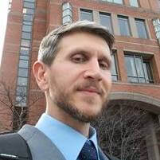

David Rothenberg
David Rothenberg studied international human rights in graduate school at Florida State University where he and Daniel Swaisgood co-founded the Human Rights Awareness Center, a student organization focused on creating interest in human rights related events and activities on campus. After graduation, David taught two human rights courses for FSU’s Program in Humanities and worked at the Center for Global Engagement with various student exchange programs. He then moved to South Korea for five and a half years, teaching ESOL, writing ESL textbooks, and developing the English LanguageTest for the 2018 Winter Olympic volunteers. David is now the analytics manager for Literacy Partners, an NYC-based nonprofit that promotes multi-generational literacy and offers English Language and High School Equivalency classes. The Human Rights Realization Community is a project David started as a place where students and educators interested in human rights can openly express and discuss their opinions in an academic manner. Moving forward with the help of my dedicated and hardworking team, we will begin compiling lesson plans based on human rights textbooks and other literature before beginning our initial outreach to university departments and educators in an attempt to increase the number of human rights courses, certificates, and degree programs offered in the US.
Daniel Swaisgood

Daniel Swaisgood’s academic journey into the field of human rights and social development began during his
undergraduate studies at Florida State University where, alongside David Rothenberg, he engaged
introductory courses such as human rights literature and human rights film, and helped establish a
student-run, human rights awareness group. However, it was during his graduate studies where this
journey really developed into a career pursuit. During his Master’s studies, he not only assisted
professors in their human rights-related interests by researching and editing, he also created, and
spent two years instructing, an undergraduate course on human rights development in U.S. history.
Following his graduate studies, Daniel attended law school where he focused his studies on various
manifestations of human rights law and international law. After then working in the areas of immigration,
criminal, and family law, Daniel eventually took a job with a local NGO where he was appointed to represent
exploited and trafficked children in court. In addition to representing exploited children, Daniel also
represented the NGO at social outreach events and worked on monitoring and evaluating the NGOs volunteer
training program.
At present, Daniel is living in Bangkok, Thailand where he consults on a variety of human rights
and social development issues for civil service organizations, international social development
NGOs, as well as the United Nations.